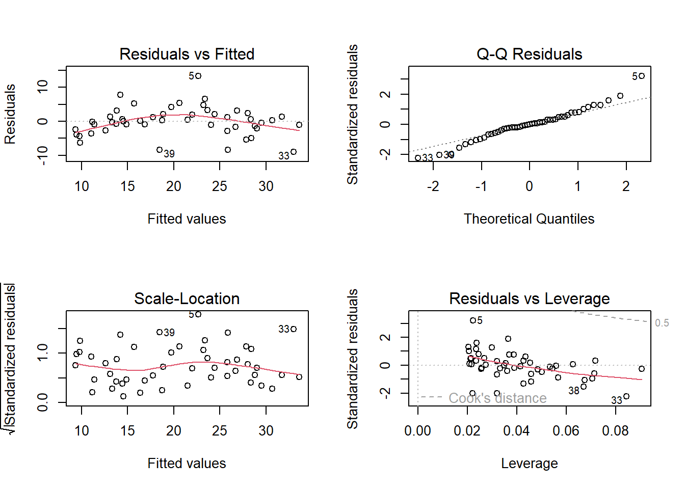
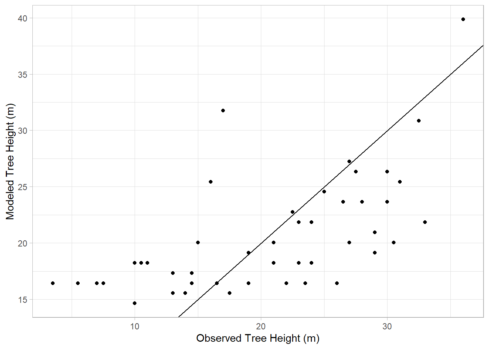
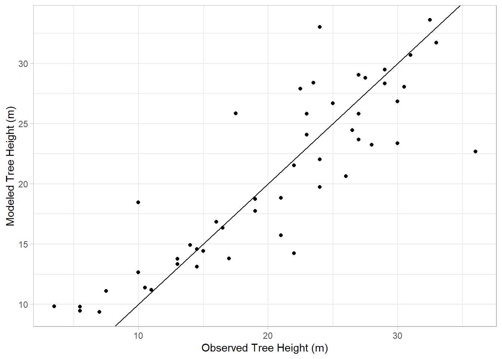
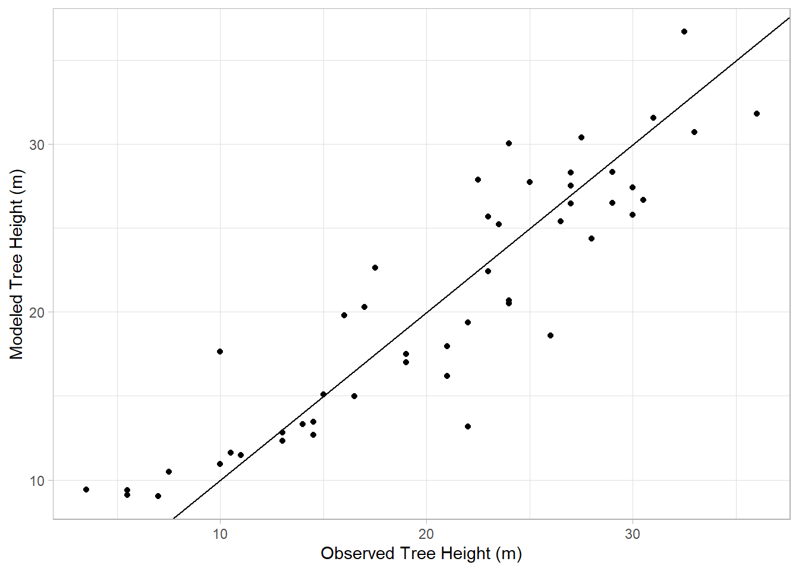

names(treeMod_dbh) [1] "coefficients" "residuals" "effects" "rank"
[5] "fitted.values" "assign" "qr" "df.residual"
[9] "xlevels" "call" "terms" "model" Regression model have several components that give us an opportunity to assess the model. We can see the structure of the object by using the names function:
names(treeMod_dbh) [1] "coefficients" "residuals" "effects" "rank"
[5] "fitted.values" "assign" "qr" "df.residual"
[9] "xlevels" "call" "terms" "model" Each of these elements tells us something about the model, or about the individual observations it is comprised of. We can access these different elements using the $ symbol. For example, we can access the residuals, or how far off the line each point in the data set was, with treeMod_dbh$residuals:
treeMod_dbh$residuals 1 2 3 4 5 6
-0.17781423 -5.37616850 5.30012265 2.04963689 13.33105569 3.16136113
7 8 9 10 11 12
-1.27666592 1.97706471 -0.76185030 -0.06446756 -0.87357454 0.67358279
13 14 15 16 17 18
-0.48140303 -3.57993408 -0.89726008 -2.62644051 -8.34026130 0.32445909
19 20 21 22 23 24
4.76335080 7.78790100 -2.03115432 1.26421545 -0.31160159 1.38415872
25 26 27 28 29 30
2.16795773 0.26583788 0.48604151 0.15411364 -1.05884250 -4.28791604
31 32 33 34 35 36
-2.80110924 -1.09236950 -9.00508857 6.64589461 4.26746031 5.38653892
37 38 39 40 41 42
-4.88514531 -6.32706810 -8.44052166 -1.68203063 -2.33766733 0.59214069
43 44 45 46 47 48
2.46722325 1.28692946 -0.83528713 -3.93554749 3.35225415 1.19889076
49
3.19899764 Each of these pieces of information can be helpful in assessing the fit and usefulness of the model. However, an easy way to get a looking at these is by plotting them. When you use the base R plot function on a linear model, it will cycle through a series of four graphs aimed at evaluating different assumptions of the linear model. However, it’s going to be difficult to look at four plots simultaneously, so we’ll need to find a way to plot them all at once. Here, since we’re using Base R to plot, we’ll use the par function to plot more than one object in the same plot space, and give it the argument mfrow=c(2,2), which means “multiframe row-wise configuration, to plot these in a 2 x 2 facet grid:
par(mfrow=c(2,2))
plot(treeMod_dbh)
How do we interpret these? Let’s go through each of these and figure out what they are saying
Residuals vs Fitted This is showing how far the modeled or “fitted” values deviate from their corresponding observed value. Ideally, these should be evenly distributed around a value of 0, indicating that there isn’t any patterning in the residuals that would suggest non-linear patterns (e.g., systematic biases) in the model
Normal Q-Q This is showing whether the distribution of the residuals is normal or skewed. A skewed distribution would strongly deviate from the diagonal line in this plot. Some deviation is expected, especially at the ends, but overall they should fall along the line.
Scale-Location Shows whether the residuals
Residuals vs Leverage This plot is looking for influential outliers, which would fall outside the dashed lines. Here, point 5 is getting close, but overall
Overall, these plots indicate that our model is doing an OK job of
Linear regression models can include more than one predictor term. When this is the case, th A multiple regression formula would look something like this:
y~x1+x2+...
In this formula, y is still the response variable (tree height) and x1 is a predictor, x2 is a second predictor. For example, we might try combining the two predictor variables from our previous section:
treeMod_cbDbh<-lm(`TreeHt (m)`~ `DBH (cm)` + CrnBase,data=treeDataNC)
summary(treeMod_cbDbh)
Call:
lm(formula = `TreeHt (m)` ~ `DBH (cm)` + CrnBase, data = treeDataNC)
Residuals:
Min 1Q Median 3Q Max
-7.6417 -2.7392 0.5231 2.5024 8.8383
Coefficients:
Estimate Std. Error t value Pr(>|t|)
(Intercept) 6.31802 1.11825 5.650 9.66e-07 ***
`DBH (cm)` 0.16665 0.01571 10.608 6.02e-14 ***
CrnBase 0.88047 0.20309 4.335 7.85e-05 ***
---
Signif. codes: 0 '***' 0.001 '**' 0.01 '*' 0.05 '.' 0.1 ' ' 1
Residual standard error: 3.589 on 46 degrees of freedom
Multiple R-squared: 0.8195, Adjusted R-squared: 0.8116
F-statistic: 104.4 on 2 and 46 DF, p-value: < 2.2e-16This gives a marginal improvement on our last model. What about a third predictor? How about parallel crown diameter?
treeMod_cbDbhDia<-lm(`TreeHt (m)`~ CrnBase + `DBH (cm)` + `CdiaPar (m)` ,data=treeDataNC)
summary(treeMod_cbDbhDia)
Call:
lm(formula = `TreeHt (m)` ~ CrnBase + `DBH (cm)` + `CdiaPar (m)`,
data = treeDataNC)
Residuals:
Min 1Q Median 3Q Max
-7.6352 -2.6076 0.5357 2.4097 8.8775
Coefficients:
Estimate Std. Error t value Pr(>|t|)
(Intercept) 6.19594 1.21140 5.115 6.27e-06 ***
CrnBase 0.87649 0.20565 4.262 0.000102 ***
`DBH (cm)` 0.15823 0.03410 4.641 3.01e-05 ***
`CdiaPar (m)` 0.04966 0.17799 0.279 0.781500
---
Signif. codes: 0 '***' 0.001 '**' 0.01 '*' 0.05 '.' 0.1 ' ' 1
Residual standard error: 3.625 on 45 degrees of freedom
Multiple R-squared: 0.8198, Adjusted R-squared: 0.8078
F-statistic: 68.23 on 3 and 45 DF, p-value: < 2.2e-16Hmmm… the multiple R-squared went up slightly, but the adjusted went down. What gives? An important point to consider here is that adding variables adds to model complexity. When adding predictors, the name of the game is trying to balance model simplicity with explanatory power. In this case, the additional variability explained by the added predictor is offset in the adjusted R-squared by the added complexity of the model. Adding in a ton of variables may cause what is called “overfitting”, where the model is fit so perfectly to the dataset it is built from that it wouldn’t do well in predicting other values.
It is also important not to lose sight of the goal of the modeling venture. Here, we want to provide a good way to estimate tree height that is easier than measuring the height itself. Requiring multiple measurements may not achieve this goal, so the tradeoff may not be worth it to the user.
What if we want to look at the relative fit of two models? We can do this visually by checking the model’s fitted values, those it predicts, versus those that are observed. For example, here’s what this looks like for the crown base height model:
trueHeight<-treeDataNC$`TreeHt (m)`
modHeight<-treeMod_cb$fitted.values
fitData<-tibble(trueHeight,modHeight)
ggplot(fitData,aes(x=trueHeight,y=modHeight))+
geom_point() +
geom_abline(b = 1, a = 0) +
labs(x="Observed Tree Height (m)",y="Modeled Tree Height (m)") +
theme_light()Warning in geom_abline(b = 1, a = 0): Ignoring unknown parameters: `b` and `a`
Ideally, if the model does a good job of estimating reality, our estimated values should fall along a diagonal line with a slope of 1 and a y-intcercept of 0, indicating a perfect linear relationship. Here, we use geom_abline function to show that line in our graph, and how the observed heights relate to their modeled counterparts.
In this case, the points don’t align well with the line, consistent with the R2 we saw for this model earlier indicating a poor fit. Now let’s look at the model based on DBH:
trueHeight<-treeDataNC$`TreeHt (m)`
modHeight<-treeMod_dbh$fitted.values
fitData<-tibble(trueHeight,modHeight)
ggplot(fitData,aes(x=trueHeight,y=modHeight))+
geom_point() +
geom_abline() +
labs(x="Observed Tree Height (m)",y="Modeled Tree Height (m)") +
theme_light()
Better. And now adding the two
trueHeight<-treeDataNC$`TreeHt (m)`
modHeight<-treeMod_cbDbh$fitted.values
fitData<-tibble(trueHeight,modHeight)
ggplot(fitData,aes(x=trueHeight,y=modHeight))+
geom_point() +
geom_abline() +
labs(x="Observed Tree Height (m)",y="Modeled Tree Height (m)") +
theme_light()
Similar to our last model, consistent with the finding of a marginal improvement. We can also use the Analysis of Variance (ANOVA) tests to compare two models. Here, we’ll compare the model using crown base model with the combined crown base-DBH model:
anova(treeMod_cb, treeMod_cbDbh)Warning in anova.lmlist(object, ...): models with response '"TreeHt (m)"'
removed because response differs from model 1Analysis of Variance Table
Response: treeDataNC$`TreeHt (m)`
Df Sum Sq Mean Sq F value Pr(>F)
treeDataNC$CrnBase 1 1239.8 1239.82 28.541 2.62e-06 ***
Residuals 47 2041.7 43.44
---
Signif. codes: 0 '***' 0.001 '**' 0.01 '*' 0.05 '.' 0.1 ' ' 1The RSS or residual sum of squares on the second model and the low p-value indicates an improvement between model 1 and model 2. Now let’s compare cbDBH and cbDBHDia:
anova(treeMod_cbDbh,treeMod_cbDbhDia)Analysis of Variance Table
Model 1: `TreeHt (m)` ~ `DBH (cm)` + CrnBase
Model 2: `TreeHt (m)` ~ CrnBase + `DBH (cm)` + `CdiaPar (m)`
Res.Df RSS Df Sum of Sq F Pr(>F)
1 46 592.40
2 45 591.37 1 1.0232 0.0779 0.7815In this case, the residual sum of squares went up with the addition of the new predictor, and thus the p-value is well above the 0.05 cutoff.